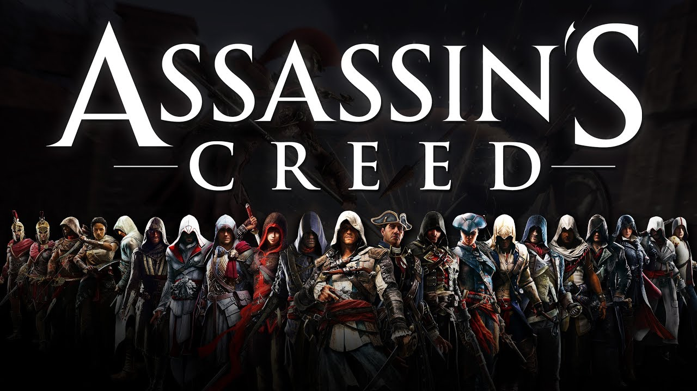

Assassin`s Creed
Assassin`s creed är en grupp lönnmördare som slåss mot tempelriddare. spelet handlar om ett brödraskap mellan lönnmördare i mellanöstern under korstågen. Spelet har blivit en populär spelserie som nu är inne på sitt 23 spel i spelserien. Det som gör spelet så speciellt är att dem har alltid sättit spelet i en speciell tidszon, som korstågstiden och alla revolutioner som franska revolutionen som exempelvis. Det man vill åstadkomma i spelet är att man vill ha fred, men tempelriddarna och lönnmördarna har samma mål men inte samma sätt att åstadkomma det. Tempelriddarna vill ha fred genom att ha kontroll medans lönnmördarna vill ha fred på fri vilja.
Spelets genrer är: Historia, Action och Äventyr
Budskapet i spelet: I spelet så bemöter man historiska platser, personer och händelser. Platser och händelser som den amerikanska revolutionen när dem slängde tea tunnorna överbord i boston 1773, även känt som bostons tea party. Kända personer som George Washington , Benjamin Franklin och Kleopatra.
Grand Theft Auto
Grand Theft Auto som oftast förkortas GTA är en prisbelönt actionspelserie om det moderna gangsterlivet, där vapen, pengar, fordon och olika typer av jobb spelar en stor roll. Spelet är utvecklat av Rockstargames.
I spelen så spelar man som en smågangster som under spelets gång får mer och mer inflytande hos olika personer vilket gör att man även får större inflytande i städerna. Det finns 15 olika gta spel/expansioner (dock bara 5 stora titlar) där Grand Theft Auto V är den nyaste och den mest framgångsrika av de alla. GTA V slog flera försäljningsrekord genom att tjäna in 800 miljoner dollar under de första 24 timmarna på marknaden och 1 miljard dollar under de tre första dagarna. Till skillnad från de tidigare GTA spelen så fanns det i GTA V online-flerspelarläge, vilket möjliggjorde att man kunde spela inte enbart själv och göra uppdrag med 3 olika karaktärer, i GTA online kan man göra sin egna karaktär och bestämma karaktärsdrag m.m. I GTA V så kan man ju välja om man vill göra story mode alltså single player eller om man vill köra online med andra spelare. I tidigare GTA-spel så har man bara kunnat spela som en karaktär i story mode, fast i GTA V kunde man nu spela som 3 karaktärer.
GTA:s genrer: Action-äventyr, skjutspel, öppen värld. GTA:s budskap: GTA har inte direkt något budskap utan det är bara ett spel som går ut på att vara kriminell i princip.
GTA tar upp ämnet historia och samhälle eftersom det är hyfsat verklighetsbaserat, alltså GTA V t.ex. utspelar ju i Los Santos som är väldigt likt Los Angeles i Kalifornien. I spelet så kan man rätt många saker som man kan göra i verkliga livet, som t.ex. gå på klubbar, köpa bilar, köpa hus m.m. Hela spelet utspelar sig ju liksom lite som samhället ser ut idag på olika ställen.